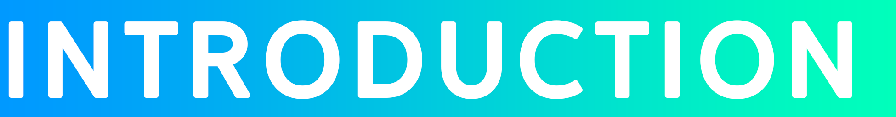
As a Lead Artist, during this project I responsible of devising the game visual style and directing the production of all visual material through the development.
I was as well in charge of organizing and supervising the art department and all of its tasks during the development of the game. This included supervising all tasks that were art related in Hack&Plan, and at the same time, doing quality checks on them. In this project the department art was formed by 10 members, including myself, even though we ended up being 9.
In the early stages of the project, during concept discovery, the idea of the game was quite different from what we have now, and our team was still experimenting with what we could do and what we couldn’t with the technology and knowledge that we had. In response of that, the first thing we did was choosing on what direction we would go, regarding the artstyle aspect of it. Our first choice was to go for a handpainted, lowpoly style, since the load of work that represented was far lower that what pbr, or any other style or pipeline would ask for.
To show our idea of the game to the rest of the team, we started doing some concepts and mockups of how we thought the game would look, and we shared those with them.
I as well did a document, where it explained how every artist should deliver their work, the formats that they had to use, and all the steps that they would have to follow to have their work approved. This was done to make sure that everything we developed was functional and to avoid mistakes that would make us loose time.
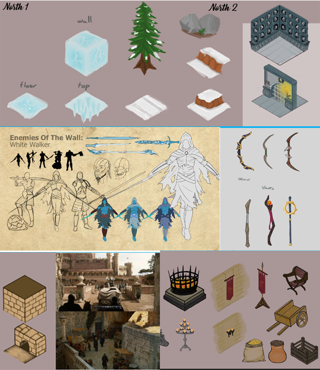
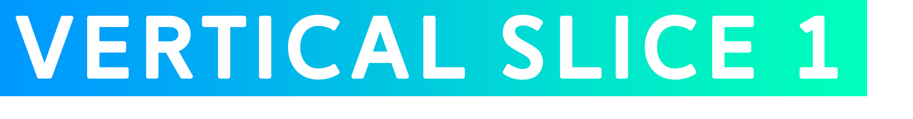
After that, for the first vertical slice, we went for that look, and we got the following result.
The software we used in this delivery was 3dCoat for texturing, 3ds Max for the modelling, and Maya for the animations.
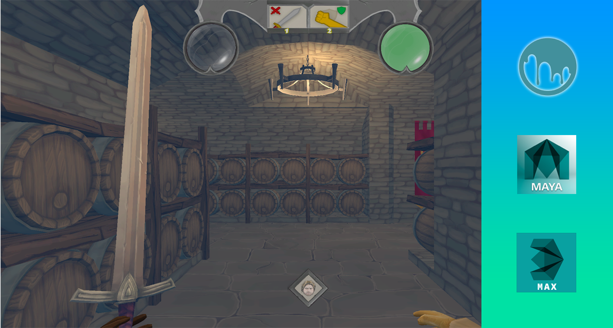
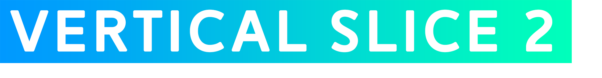
For the second vertical slice, we were asked by the producers to go for the pbr workflow instead, so we turned the artstyle 180 degrees, and we approached it with a more realistic aspect.
Since our period of work between milestones/deliveries was approximately of two weeks, the art department was left with a week and a half of time to produce all the new assets needed for every delivery. That was a very small gap of time, so we had to choose very carefully on how we approached every delivery, because we knew we wouldn’t have the time to do everything we wanted.
Because changing all the textures of the game and developing highPoly versions of all the meshes in a week and a half was not realistic, I chose to approach this issue by using CrazyBump, and developing normal and specular maps for them.
The results were the following:
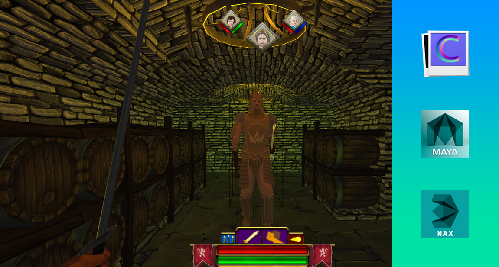
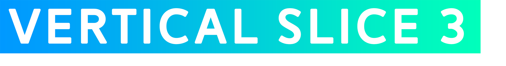
For the third vertical slice, since we had 2 more weeks to iterate over our work we went for the full specular+glossiness workflow, and by working with the shader engineers we got a really satisfying result. All highpoly meshes were finished in time, and new textures were made, from scratch both by the environment and by the characters.
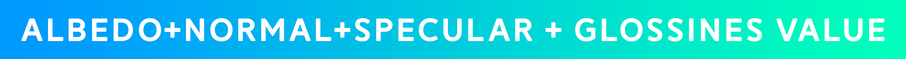
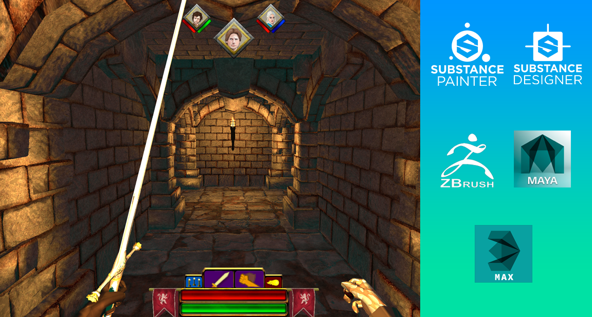
During the development of this delivery, we created a whole new tile set for a new level, including textures and models and the Final Boss first iteration. Having two different tile sets led to a better overall result and feeling for the game.
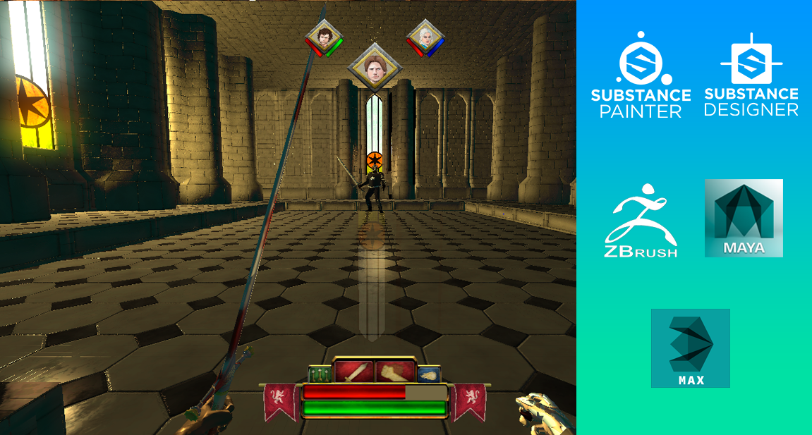
Finally, for the second Alpha we reiterated the Tile set for the first level, since we had more experience using the new software, and we achieved an important visual update by doing so.
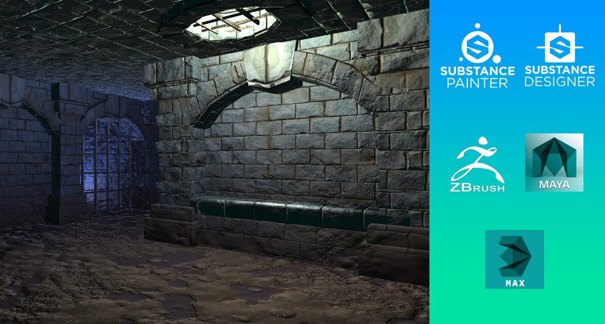
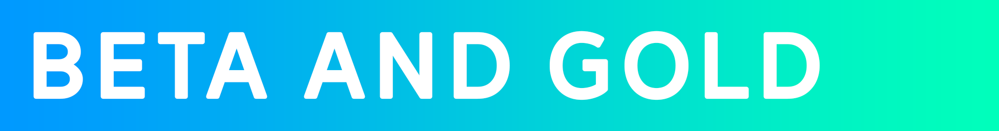
For the Beta and gold, we fixed visual bugs, and improved certain assets, like adding a new variant to the Lannister Flag, between other things.
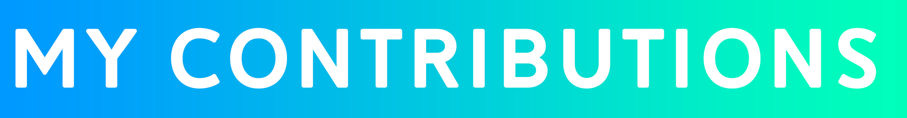
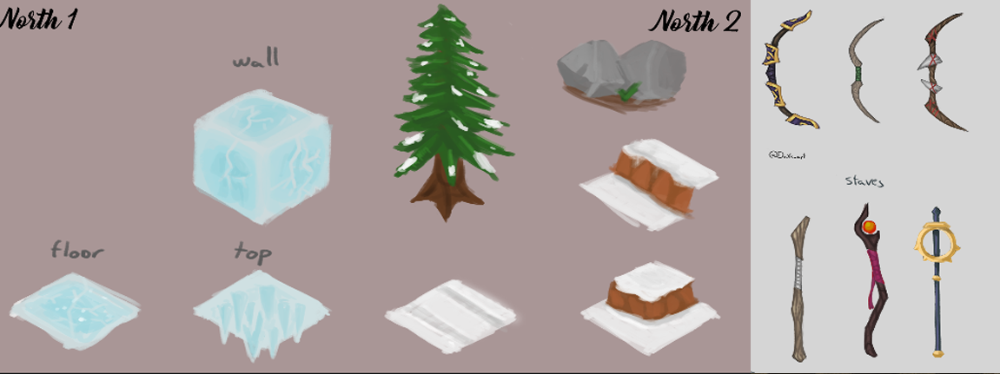
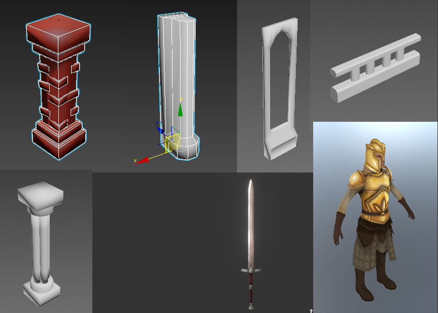
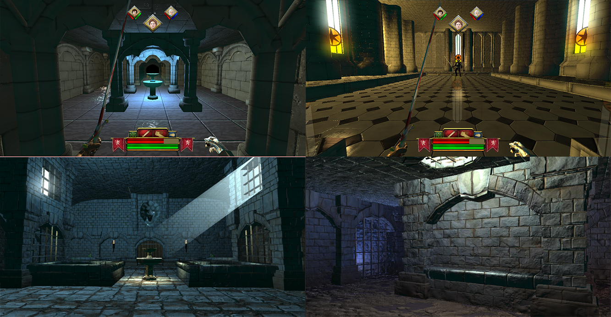

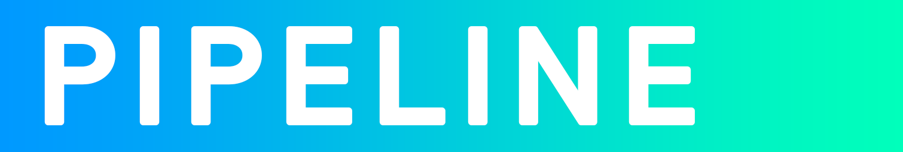

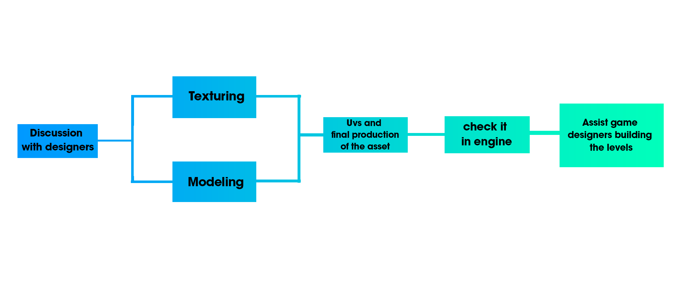
- Discussion/Asset list:During this phase we would discuss with the designers about what feeling they would want to give to that level, and based on that, the artists would make a list of assets they needed to do in order to accomplish that.
- Modeling/Texturing:After that, artists would start either texturing or modeling the different assets. Since the textures were done in substance painter, we could work on them while someone else was modeling.
- Finalizing the assets:Once those were done, we would put them together, to finish the asset and export it to the engine.
- Check it in Engine:Once exported, we would check if the asset could be imported in the engine correctly.
- Assist game designers building the levels: If some parts of the level needed a strong visual style or a lot of detail, we would build those rooms with the assets, and make sure they looked as we planned.
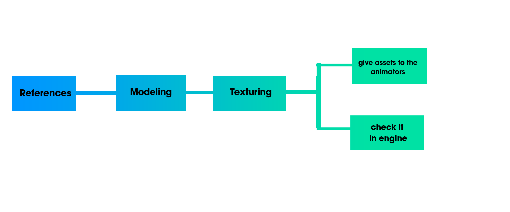
- References:During this phase, the artist would take the necessary references needed for the character.
- Modeling:After that, artists would start modeling the different characters, in high and lowpoly.
- Texturing: Since only one artist would be in charge of modeling one character, then he would also texture it. .
- Give assets to the animators:Once exported, the artist should deliver their work to the animators, so they could start animating. In some cases, the artist would give the animator a base mesh to start working with.
- Check it in engine: :Once exported, we would check if the asset could be imported in the engine correctly.
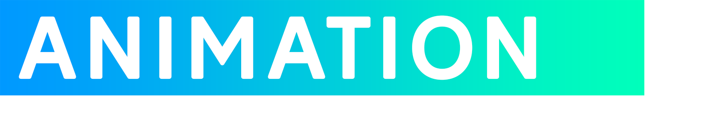
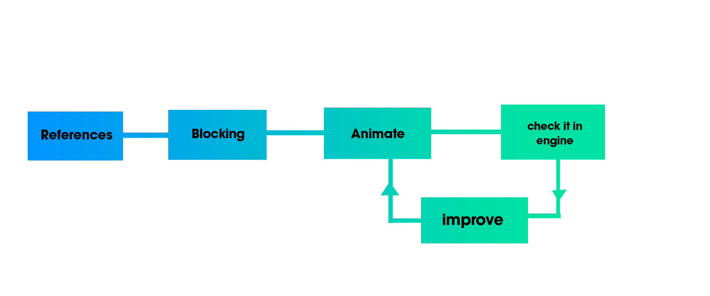
- References: During this phase, the artist would take the necessary references needed for the animation.
- Blocking
- Animating
- Check it in engine: :Once exported, we would check if the asset could be imported in the engine correctly.
- Improve: :Since there is always room for improvement, and sometimes they had to produce placeholder assets for the others to test in engine, if the animator in question thought he could improve his animation, then he would do the loop again
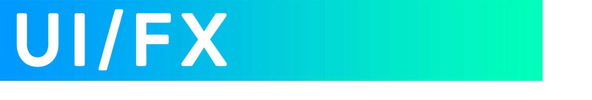
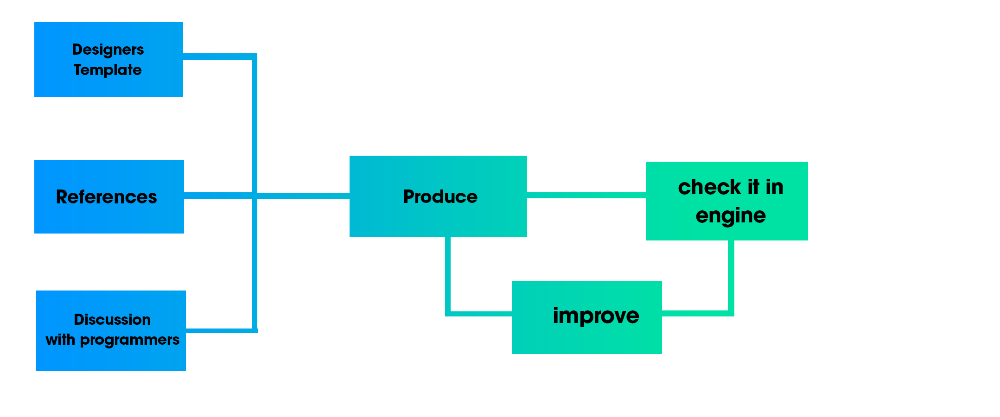
- Designers Template:The artist in question would take the template made by the designer as a reference
- References
- Discussion with programmers: The artist in question would ask the programmer how they needed the work to be delivered
- Produce:Produce the 2D art.
- Check it in engine: Check if the asset could be imported in the engine correctly, and if it works properly.
- Improve: :Since there is always room for improvement, if the artist in question thought he could improve his sprites, then he would do the loop again
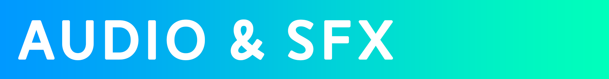
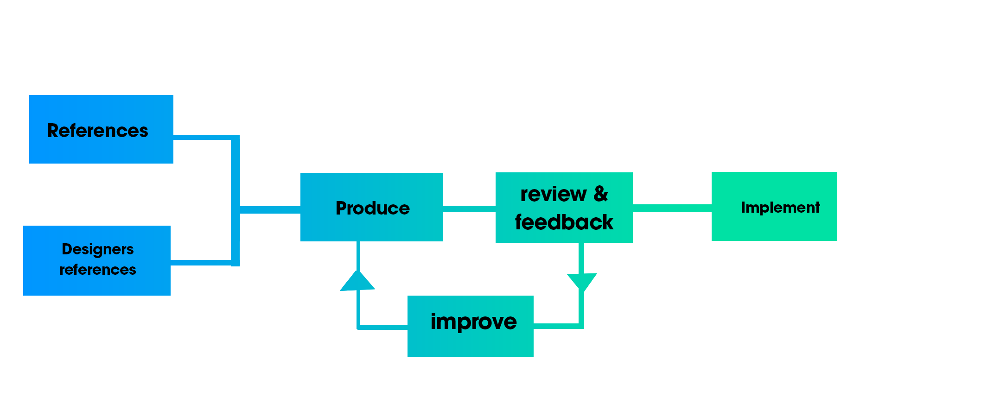
- Designers References:The artist in question would take the list of audios made by the designer as a reference
- References
- Produce: :The artist would proceed to create his sound effects, or to find them in the internet.
- Review and feedback: Once done, we would try to improve the sound effect based on the feedback and reviews of various members
- improve: :Since there is always room for improvement, if the artist in question thought he could improve his audios, then he would do the loop again
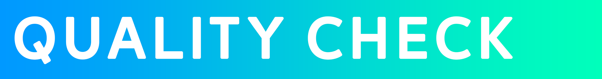
As commented earlier, since the time between deliveries was extremely short, and the other departments needed placeholders to test with, what we did was to produce fast placeholders for the other departments to test, and from that, the artists would improve their work and implement it to the engine. In that way, we would make sure that we could at least get everything before the freeze, and then improve it if there was any time left.
Obviously, if I saw some assets that weren’t at the same level as the others, or it was missing something to be approved, I would move it again to the To Do list, and explain the reasons of why it wasn’t approved to the artist in question, and explain, personally, to him how to either fix it or improve it.
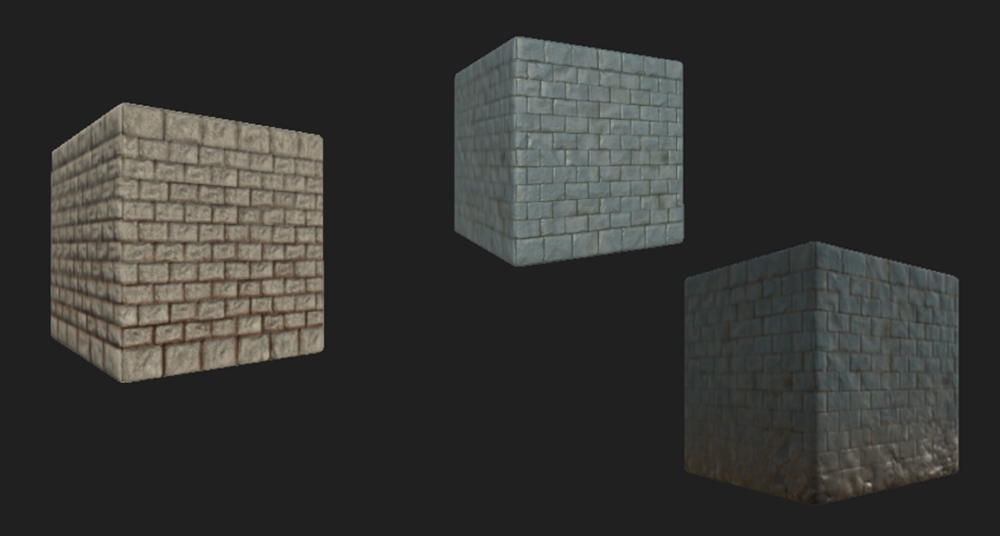
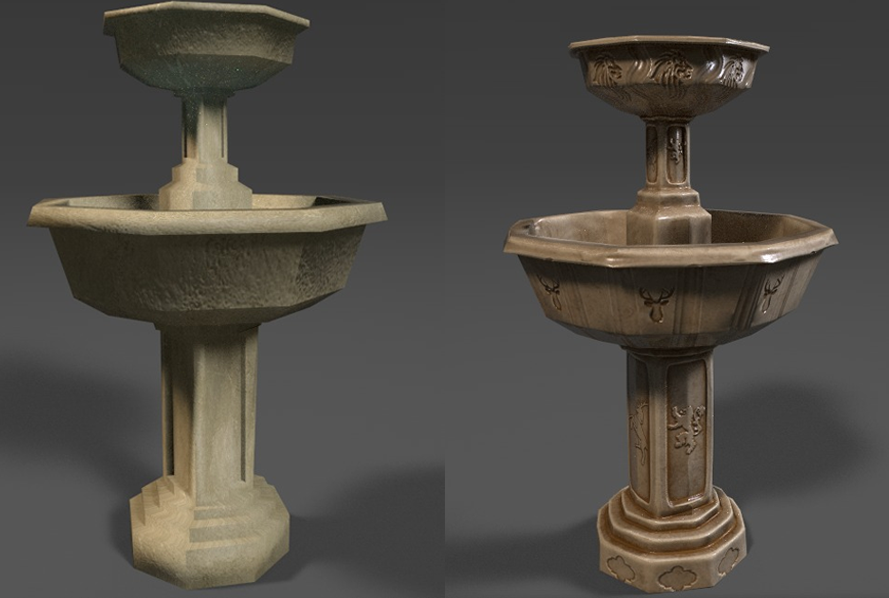
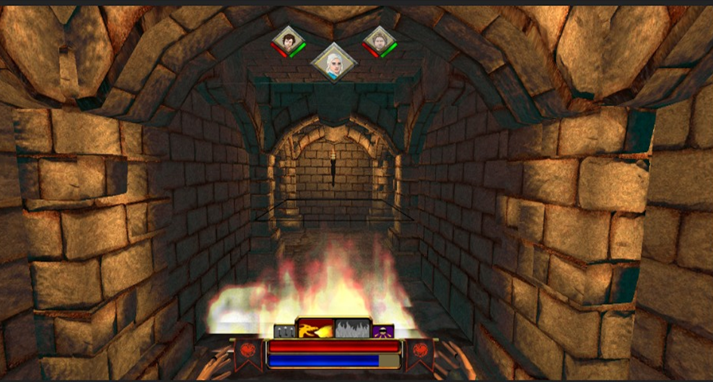
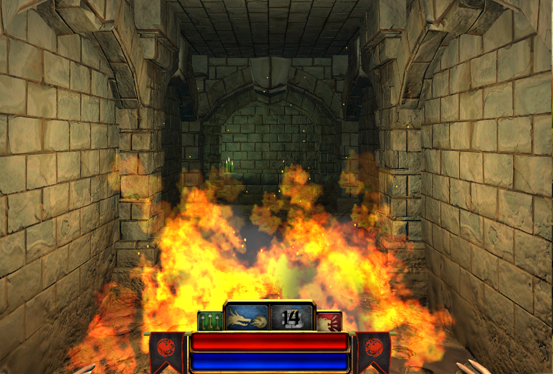
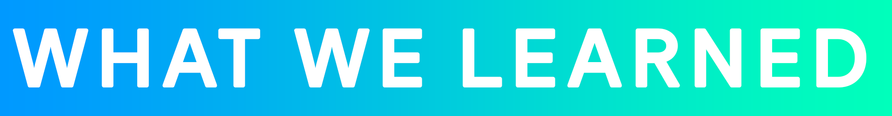
During this project we did some things right, but as well, some things wrong. Finding and detailing those things we didn’t do right is a crucial thing, since from that you can learn how to improve in those aspects. Below we’ve put together a list of things we learned in this project:
- Communication: Keeping a big group like this one organized is really hard, and the lack of communication between teammates was the cause of a lot of problems, like doing the same work twice, or doing incompatible work, among others… From the leads group we had to encourage people to communicate more, so if they had a problem, it could be solved easily. I believe that even though the problems never ceased to exist, the communication between members, and the speed needed to solve those problems significantly improved during the development.
- Meet the deadlines, then improve: As I mentioned before, lots of assets were improved and reiterated during the development of the project, however, it had not always been like this. During the first deliveries, some artists spent too much time and work developing one or two assets instead of doing all their assigned assets or tasks. Since it was more important to have all assets rather than just one. I encouraged them to divide their time equally in every task, so they could finish their work (even though that meant a lower quality asset), and then if there was time, spend time improving those.
- Know your limits: When our department had to decide the list of new assets they would do for the next release, there was always a tendency to put a lot of new things onto the table, believing that we were capable of doing that in the short time we had. However, that ended up being an excess of workload for every member, and that was not what we wanted. Because of that, every time we presented our tasks, I had to be realistic, and decide what could be done and what couldn’t.
- My job here is done!: During the first deliveries some artists would end up their work without checking if it worked in the engine. That was a problem because, there were some assets that did not work in game, that had to be re-exported. To solve that, I especially remarked in the production document that an asset wasn’t finished until it was checked in Engine, and I asked the artists to upload a screenshot of the asset in Engine, when moving a task into the “To Check” bar in Hack&Plan.